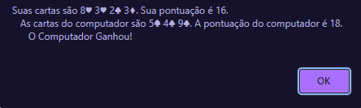

Rafael Chagas Correia Desenvolvedor Web FullStack
Projeto Blackjack
Um jogo de Blackjack(21) criado por meio de JavaScript, onde o usuário joga contra o computador. Interagindo por meio de "confirm" e "alert" o usuário pode ver suas cartas e escolher se quer ou não sortear mais uma carta.
Assim que a opção "cancelar"(parar de sortear) é selecionada, o computador passa a sortear suas cartas automaticamente até que supere a pontuação do usuário ou ultrapasse 21.
Ao final do jogo uma mensagem sinaliza as cartas e as pontuações de ambos, junto ao resultado.
Tecnologias ultilizadas:
- JavaScript